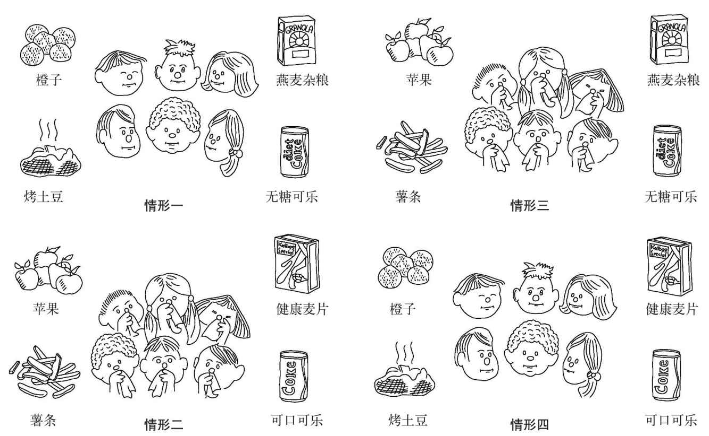

传统上认为科学推理对幼儿来说太难了。但是，6岁的儿童就已经能够明白检验假设的目的了。在简单的问题中，他们还能区分针对假设确定性及不确定性的检验。例如，在一个实验中，6岁和8岁的儿童听到了一个关于兄弟俩的故事，这对兄弟俩以为他们的屋子里住了一只老鼠。一人认为这只老鼠是“大爸爸老鼠”，而另一人认为它是“小婴儿老鼠”。为检验想法，兄弟俩准备在晚上把放了芝士诱饵的盒子留在外面。儿童看到了这两个盒子，一个的开口很大，另一个的开口很小。他们被问道：要证明谁是对的，兄弟俩应该用哪个盒子。大多数儿童认为兄弟俩应该用开口小的盒子。如果第二天芝士不在了，就说明老鼠很小。如果芝士还在，就说明老鼠一定很大。
当情境中有多个共存的因果变量时，儿童（和成人）都会觉得更难检验假设。当已有的知识妨碍了检验的设计时，假设检验也会更加困难。虽然儿童对因果关系的基本直觉通常是正确的，但为区分不同理论而整合多种线索的能力会以相对缓慢的速度发展。例如，在一项研究中，11岁和14岁的被试者都不能辨别出寄宿学校中的哪种食物让学生得了感冒。11岁和14岁的被试者看了食物的图片（例如苹果、薯条、燕麦杂粮和可口可乐）。这些食物与学生在学校是否得了感冒（学生图片在食物图片旁出现）有系统的相关关系。尽管如此，只有30%的11岁被试者和50%的14岁被试者能够找到关键的食物。多数错误都是，因为一个学生在一种情形下吃了某种食物后得了感冒，就认为是这种食物导致了感冒（“包含错误”）。

图7 测试儿童的因果推理能力
造成这些系统性包含错误的部分原因似乎是儿童已有的因果认识。在食物研究中，儿童也许对哪种食物是健康的有很明确的观点。这种已有知识可能会妨碍他们识别出那些和感冒系统相关的食物（其中一个是通常被认为是健康的苹果，见图7）。人们推理时还有一个很强的“确认偏差”，这在所有年龄段的人身上都能找到——我们倾向于去寻找和我们先前想法一致的因果线索。这是在众多领域（例如科学、经济、法律和课堂中的科学推理）导致推论错误的一个主要原因。
随着儿童对推理过程越来越了解并且能进行策略性的反思，推理能力像记忆力一样也会得到提高。例如，在儿童发现可能有多个原因导致了某一个结果后，他们就能想出更好的办法来检验假设。现实生活中的多数因果推理问题是多维度的，多数的科学问题也同样如此。为了找出可能的结果，我们在推理时不能将原因和结果割裂开来。随着年龄增长，儿童会越来越擅长发现不同归因维度的相互关联和处理多维度问题。这通常是由提高了的工作记忆能力来主导的。儿童也会更擅长克服“确认偏差”。
另外，科学推理技能的直接教授也会帮助儿童在不被先前想法影响的情况下，做出符合逻辑的推理。这比听上去要困难，因为先前存在的想法有很强的影响力。当然，在很多社会情境下，我们如果以先前存在的想法为基础进行推理，会更有优势。这是我们形成刻板印象的一个原因，我们先前提到过，它对社会道德推理有重要作用（例如通过“内群体”和“外群体”，见第四章）。